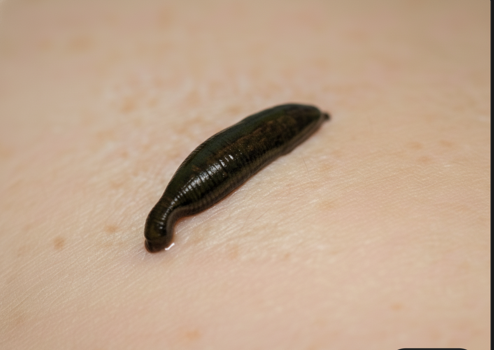
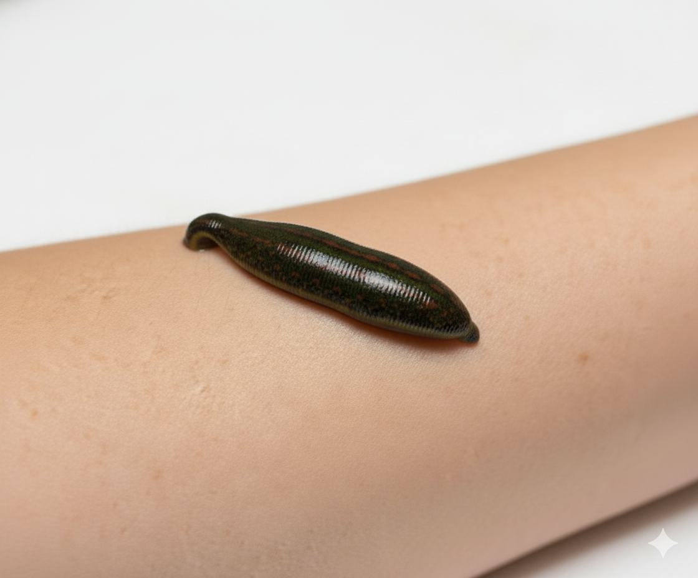

Hakkımızda
Bölgemiz ve Hedefimiz
Kocaeli ve İstanbul'dan sipariş alıyor, doğadan gelen şifayı bölgenize ulaştırıyoruz.
Kocaeli & İstanbul Odaklı Hizmet
Kocaeli Darıca merkezli olarak hizmet veren Şifa Kaynağı, öncelikle Kocaeli ve İstanbul bölgelerindeki müşterilerimize hizmet sunmaktadır. Bölgemizdeki sağlık uzmanları, tıbbi sülük kullanıcıları ve şifa arayan herkesi hedefliyoruz. Darıca, Gebze, Kocaeli merkez ve çevre ilçelerle birlikte, İstanbul'un Anadolu ve Avrupa yakasına hızlı ve güvenilir teslimat hizmeti sunuyoruz.
Uzman kadromuz ve stok yönetimimiz sayesinde, müşterilerimize en taze ve etkili tıbbi sülükleri ulaştırmayı hedefliyoruz.
Tek Kullanımlık & Hijyen Garantisi
Şunu net bir şekilde belirtmek isteriz ki, sattığımız her sülük SIFIRDIR ve sadece SİZE ÖZELDİR. Kullanılmış bir sülüğün tekrar satılması, bizim için mesleki ahlakın ve insan sağlığının ihlalidir. Bu, kırmızı çizgimizdir.
%100 Doğal ve Saf Kaynak
Sülüklerimiz, ilaç ve kimyasallardan tamamen arındırılmış, doğal gölet ortamlarında yetişir. Doğanın onlara bahşettiği şifalı enzimleri en saf haliyle koruyarak sizlere ulaştırırız.
Uzman Seçimi: Tıbbi Türler
Rastgele değil, sadece şifa potansiyeli en yüksek olan, tıbbi değeri kanıtlanmış Hirudo Medicinalis ve Hirudo Verbana türlerini özenle seçerek satışa sunarız. Bilgi ve tecrübe, kalitemizin temelidir.

Hikayemiz: Gelenekten Gelen Şifa Tutkusu
Biz, bu topraklarda yüzyıllardır bilinen ve kullanılan tıbbi sülüklerin şifalı gücüne inanarak bu yola çıktık. Sağlığa olan tutkumuz ve yıllar içinde edindiğimiz derin tecrübe ile müşterilerimize sadece bir ürün değil, aynı zamanda güven ve kalite sunuyoruz.
Her bir tıbbi sülüğü, en ideal doğal ortamlarından büyük bir özenle seçiyor ve hijyenik koşullarda sizlere ulaştırıyoruz. Bizim için en büyük öncelik, doğanın bu mucizesini en saf ve etkili haliyle sizlere sunarak sağlığınıza katkıda bulunmaktır. Bilgi birikimimiz ve işimize olan saygımız, kalitemizin en büyük güvencesidir.
Şifanın Kaynağı: Kullandığımız Tıbbi Türler
Her sülük aynı değildir. Biz, tedavide etkinliği dünyaca kabul görmüş iki özel tür ile çalışıyoruz.

Hirudo Medicinalis
"Tıbbın Gözdesi" olarak da bilinen bu tür, binlerce yıldır tıp tarihinde kullanılan en klasik sülüktür. Ürettiği biyoaktif enzimlerin zenginliği ve güçlü iyileştirici etkileriyle tanınır.

Hirudo Verbana
"Doğanın Güçlü Şifacısı" olan Verbana, özellikle dolaşım sistemini düzenlemedeki etkinliği ve dayanıklılığı ile bilinir. Modern hirudoterapide en çok tercih edilen türlerden biridir.